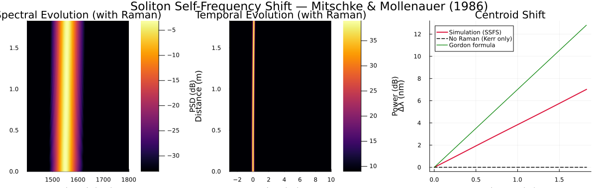

Example 2: Soliton Self-Frequency Shift
Reproducing the Raman-induced spectral red-shift first observed by Mitschke & Mollenauer (1986) and explained analytically by Gordon (1986)
DOIs:
- 10.1364/OL.11.000659 — Mitschke & Mollenauer, Opt. Lett. 11, 659 (1986)
- 10.1364/OL.11.000662 — Gordon, Opt. Lett. 11, 662 (1986)
Physical Background
When a fundamental soliton propagates in an anomalous-dispersion fiber, the Raman gain spectrum causes the higher-frequency components to amplify the lower-frequency ones, producing a continuous self-frequency shift (SSFS) toward longer wavelengths. Gordon's analysis gives the shift rate:
\[\frac{d\Omega_R}{dz} = -\frac{8 T_R}{15} \frac{|\beta_2|}{T_0^4}\]
where $T_R \approx 3$ fs is the Raman slope parameter and $T_0$ is the soliton half-width. The shift is stronger for shorter pulses (scales as $T_0^{-4}$).
Simulation: Fundamental Soliton (N=1)
We propagate a fundamental sech² soliton (N = 1) over 10 soliton periods and track the spectral centroid to directly observe the red-shift.
using JuGNLSE
# ─── Fiber parameters (standard telecom SMF-like) ───────────────────────────
lambda0 = 1550e-9 # [m] center wavelength
beta2 = -21.5e-27 # [s²/m] anomalous dispersion
gamma = 0.0011 # [1/(W·m)] nonlinear coefficient
# ─── Soliton parameters ─────────────────────────────────────────────────────
T0 = 50e-15 # soliton half-width [s] (≈ 88 fs FWHM)
# SSFS scales as T₀⁻⁴: 50 fs → ~12 nm shift; 200 fs → ~0.1 nm (invisible!)
P0 = abs(beta2) / (gamma * T0^2) # fundamental soliton peak power [W]
LD = T0^2 / abs(beta2) # dispersion length [m]
Zsol = (π / 2) * LD # soliton period [m]
# ─── Grid and medium ────────────────────────────────────────────────────────
# Time window must cover walk-off: soliton drifts ~T_R/T₀² per LD
grid = create_grid(2^13, 20e-12, lambda0)
medium = Medium(;
length = 10 * Zsol, # 10 soliton periods
gamma = gamma,
loss = 0.0,
betas = [beta2],
lambda0 = lambda0,
)
# ─── Fundamental sech² soliton ──────────────────────────────────────────────
FWHM = 2 * log(1 + sqrt(2)) * T0
pulse = sech_pulse(grid, P0, FWHM)
# ─── Run: with Raman (SSFS) ─────────────────────────────────────────────────
params_raman = SimParams(;
medium = medium,
z_saves = 400,
raman_model = BlowWood(),
self_steepening = false,
)
sol_raman = solve(pulse, params_raman; progress=false)
# ─── Run: without Raman (reference) ─────────────────────────────────────────
params_kerr = SimParams(;
medium = medium,
z_saves = 400,
raman_model = nothing,
self_steepening = false,
)
sol_kerr = solve(pulse, params_kerr; progress=false)Solution(400 saves over 1.827 m, N=8192)using Plots
gr()
c = 2.99792458e8
z_m = sol_raman.Z
# ── Spectral evolution heatmap (slice native grid) ──
wl_nm_orig = 2π * c ./ grid.W .* 1e9
wl_sort_idx = sortperm(wl_nm_orig)
wl_sorted = wl_nm_orig[wl_sort_idx]
AW_dB_sorted = 10 .* log10.(max.(1e-10, abs2.(sol_raman.AW[wl_sort_idx, :])))
idx_w = findall(1400.0 .<= wl_sorted .<= 1800.0)
AW_sub = AW_dB_sorted[idx_w, :]
wl_sub = wl_sorted[idx_w]
clim_s = (maximum(AW_sub) - 30, maximum(AW_sub))
p1 = heatmap(wl_sub, z_m, AW_sub',
xlabel = "Wavelength (nm)", ylabel = "Distance (m)",
title = "Spectral Evolution (with Raman)",
colorbar_title = "PSD (dB)", clims = clim_s,
color = :inferno)
# ── Temporal evolution heatmap (slice native grid) ──
t_ps = grid.t .* 1e12
idx_t = findall(-3.0 .<= t_ps .<= 15.0)
At_dB = 10 .* log10.(max.(1e-10, abs2.(sol_raman.At[idx_t, :])))
clim_t = (maximum(At_dB) - 30, maximum(At_dB))
p2 = heatmap(t_ps[idx_t], z_m, At_dB',
xlabel = "Time (ps)", ylabel = "Distance (m)",
title = "Temporal Evolution (with Raman)",
colorbar_title = "Power (dB)", clims = clim_t,
color = :inferno)
# ── Spectral centroid shift vs. z using track_solitons ──
_, _, centroid_w_raman = track_solitons(sol_raman)
_, _, centroid_w_kerr = track_solitons(sol_kerr)
# Convert frequency shift ⟨ω - ω₀⟩ (rad/s) to wavelength shift Δλ (nm)
Δλ_raman = (lambda0^2 / (2π * c)) .* abs.(centroid_w_raman) .* 1e9
Δλ_kerr = (lambda0^2 / (2π * c)) .* abs.(centroid_w_kerr) .* 1e9
# Gordon analytical prediction: dΩ/dz = -8·T_R·|β₂|/(15·T₀⁴)
# T_R ≈ 3 fs (Raman slope), Δλ ≈ λ₀²·|ΔΩ|/(2πc)
T_R = 3e-15
dΩdz = -8 * T_R * abs(beta2) / (15 * T0^4)
Δλ_th = [lambda0^2 / (2π * 2.99792458e8) * abs(dΩdz * z) * 1e9 for z in z_m]
p3 = plot(z_m, Δλ_raman,
label="Simulation (SSFS)",
xlabel="Distance (m)", ylabel="Δλ (nm)",
title="Centroid Shift",
color=:crimson, lw=2.0)
plot!(p3, z_m, Δλ_kerr,
label="No Raman (Kerr only)", color=:black, ls=:dash, lw=1.5)
plot!(p3, z_m, Δλ_th,
label="Gordon formula", color=:green, ls=:dot, lw=1.5)
plot(p1, p2, p3, layout=(1, 3), size=(1200, 380),
plot_title="Soliton Self-Frequency Shift — Mitschke & Mollenauer (1986)")
Expected Results
- Without Raman: soliton holds its shape; spectral centroid fixed at 1550 nm
- With Raman (T₀ = 50 fs): ~10–15 nm red-shift over 10 soliton periods — matching Gordon's formula
- The spectral heatmap shows the soliton band drifting right (to longer λ); the temporal heatmap shows a slight tilt (group-velocity change with wavelength)
- The Gordon analytical overlay should match the simulation slope closely
The SSFS scales as $T_0^{-4}$: | T₀ | Expected Δλ (10 periods) | |:–-|:–-| | 50 fs | ≈ 12 nm | | 100 fs | ≈ 0.75 nm | | 200 fs | ≈ 0.05 nm (invisible) |
Pulse-Width Dependence
To verify the $T_0^{-4}$ scaling, run simulations for different pulse widths:
T0_values = [100e-15, 150e-15, 200e-15, 300e-15]
for T0 in T0_values
P0 = abs(beta2) / (gamma * T0^2)
LD = T0^2 / abs(beta2)
Zsol = (π/2) * LD
FWHM = 2 * log(1 + sqrt(2)) * T0
grid = create_grid(2^12, max(20e-12, 30 * T0), lambda0)
medium = Medium(; length=5*Zsol, gamma=gamma, loss=0.0, betas=[beta2], lambda0=lambda0)
pulse = sech_pulse(grid, P0, FWHM)
params = SimParams(; medium=medium, z_saves=50, raman_model=BlowWood())
sol = solve(pulse, params)
λ_out = 2π*c / (sum(sol.W .* abs2.(sol.AW[:,end])) / sum(abs2.(sol.AW[:,end]))) * 1e9
λ_in = 2π*c / (sum(sol.W .* abs2.(sol.AW[:,1 ])) / sum(abs2.(sol.AW[:,1 ]))) * 1e9
println("T₀ = $(round(T0*1e15)) fs → Δλ = $(round(λ_out - λ_in; digits=1)) nm")
endReferences
F. M. Mitschke and L. F. Mollenauer, "Discovery of the soliton self-frequency shift," Opt. Lett. 11, 659–661 (1986). DOI: 10.1364/OL.11.000659
J. P. Gordon, "Theory of the soliton self-frequency shift," Opt. Lett. 11, 662–664 (1986). DOI: 10.1364/OL.11.000662
K. J. Blow and D. Wood, "Theoretical description of transient stimulated Raman scattering in optical fibers," IEEE J. Quantum Electron. 25, 2665–2673 (1989). DOI: 10.1109/3.40655